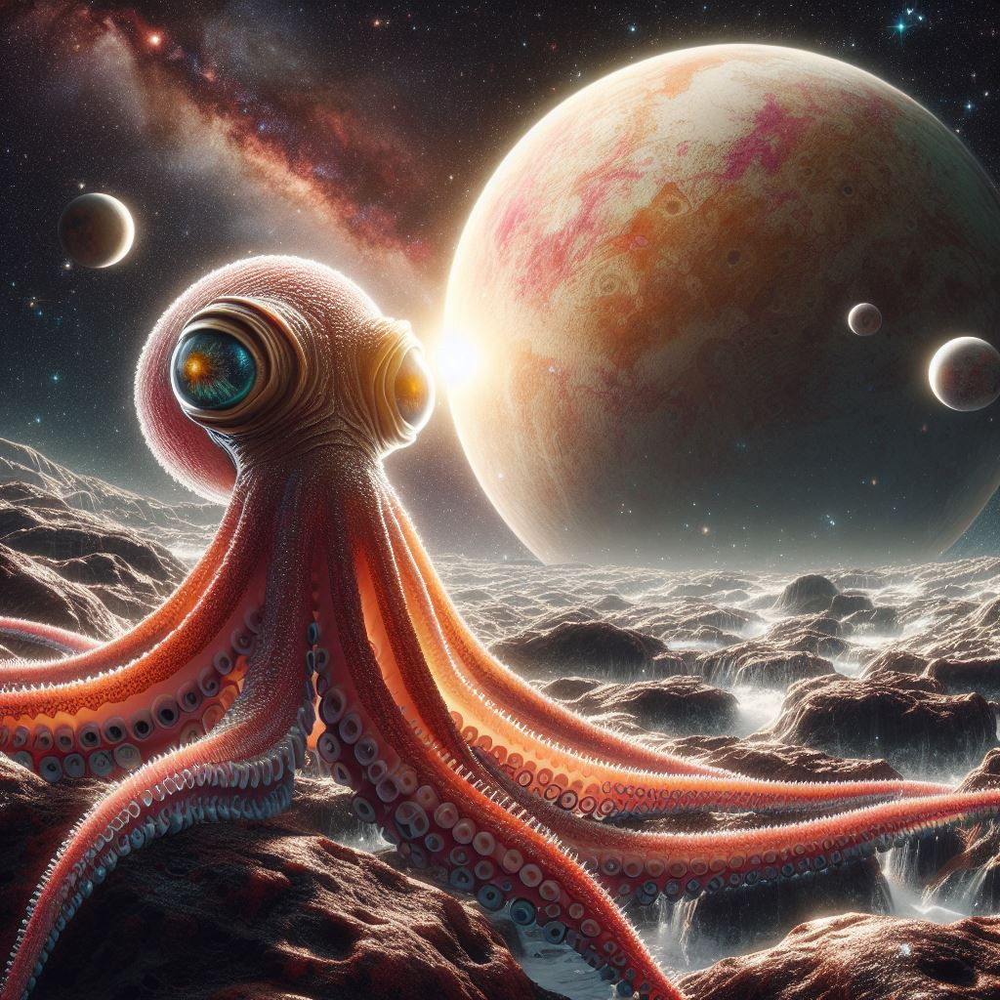

Esquiar en la Luna es posible.
16/02/2024, La Luna.
"¡Eleva tu adrenalina hasta las estrellas con el esquí en la luna!"

A punto de ser inaugurado el primer Parque Temático en Marte
19/02/2024, Marte.
"¡Descubre un universo de diversión en el primer parque temático en Marte! Una experiencia interplanetaria que te dejará sin aliento."

Ciudad encontrada en la Nebolusa Celestial
16/02/2024, La Tierra.
"¡Histórico Descubrimiento de Vida Inteligente en la Nebulosa Celestial!"

¡Viaje Épico a través del Cosmos!
15/02/2024, La Tierra.
"Stellar Us: 'Estamos a dos días para que cualquier terricola pueda hacer turismo Espacial'"
Nueva nave para atravesar el cosmos
07/02/2024, La Tierra.
"Revelada la Nave Estelar Revolucionaria de la Asociación Stellar Us"

¡Desde el Planeta Aurora!
02/02/2024, Aurora.
"¡Giro Asombroso en la Historia Espacial! Elon Musk se Rinde y Viaja al Planeta Aurora
gracias a Stellar Us"

El teletransporte. ¿Realidad o Ficción?
30/01/2024, La Tierra.
"¿Estamos cerca del Fin de las Naves Espaciales?"

Vida en Saturno
28/01/2024, Marte.
"Stellar US Deslumbra al Mundo: Descubre Indicios de Vida en Europa"